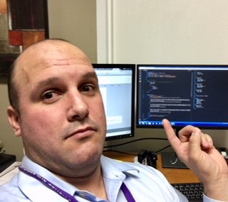

About Me
I was born and raised in Cuba. I came to US at on 2009 at the Age of 23. I have a beautiful wife and I'm the father of a 1 year old girl. This is my first kid and even though going through parenthood has not been easy it has been the one of the most beautiful experiences of my life. I'm very grateful to God for giving me such a beautiful family.
I'm a Youth Pastor at a Baptist Church in Hialeah, which is one of my greatest passions in life. I also have a job in a place called His House Children's Home. In my free time I do professional photography. So, as you can see, I have to manage time precisely to get all those things done.
Coding is one of my passions, I've always dreamed of being a professional developer. That means that I'm going to take very seriously every class and assignment. The UM Coding Bootcamp provides me the opportunity I'm seeking to explore the world of Web Development and eventually find a better job in that field.
Connect with Me